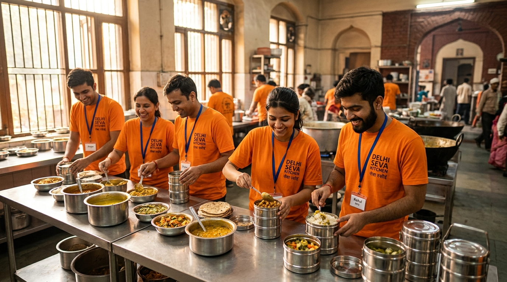

1
⏱️ Takes 60 seconds
1. Report Surplus
Hotels, banquet halls, or wedding hosts submit surplus quantity online without creating an account. Our dispatch team confirms within 15 minutes.

India wastes ~6.87 crore tonnes of food every year. We collect surplus meals from weddings, hotels, and banquets — delivering them the same day to night shelters and community kitchens.
Live figures update continuously with every confirmed pickup. Baseline figures are illustrative.
From event surplus to hot community meals in under three hours. Fast, transparent, and completely free of charge.
Hotels, banquet halls, or wedding hosts submit surplus quantity online without creating an account. Our dispatch team confirms within 15 minutes.

Trained volunteers arrive in insulated vehicles within 2 hours, test food temperature and freshness, and pack it into sealed stainless steel containers.

Food is delivered directly to registered night shelters, slum kitchens, and children’s community centres for same-day hot dinner service.

“Before Second Serve partnered with our shelter in Laxmi Nagar, feeding 85 residents every evening meant constant rationing. Now, when wedding banquets have surplus dal, paneer, and rotis, our children and elders eat fresh, wholesome meals with dignity.”
— Meera Devi
Night Shelter Coordinator, East Delhi
Explore Verified Impact Reports →Hear from banquet managers, student volunteers, and community leaders.
Food is donated for free. Your contribution powers the temperature-checked vans, food-grade containers, and logistics coordination.
Feeds an entire night shelter dining hall for one evening.
Rescues 300 meals every single month with 80G tax exemption.
Powers one electric refrigerated pickup van route for two weeks.
Official NGO UPI ID: secondserve@upi (Demo placeholder)
All donations are 50% tax exempt under Section 80G of the Indian Income Tax Act. Registration: AAKCS1234EF20261.
Surplus food from a wedding or corporate event? Don't let good nutrition end up in a dump. Report it now, and our team will be at your doorstep.